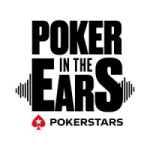

            <div class="inner">
                <!-- Post -->
                    <article class="box post post-excerpt">
                        <header>
                            <!--
                                Note: Titles and subtitles will wrap automatically when necessary, so don't worry
                                if they get too long. You can also remove the <p> entirely if you don't
                                need a subtitle.
                            -->
                            
                            <p>The long running Pokerstars podcast formerly known as EPT not live.</p>
                        </header>
                        <p>
                            Every week, the hosts of PokerStars TV (James Hartigan and Joe Stapleton) bring you a behind-the-scenes look at what it’s like being two regular folks on the international poker circuit.
Told from the perspective of a cranky British dad (Hartigan) and an undateable American bachelor (Stapes), ‘Poker in the Ears’ is a mostly uncensored take on the world of professional poker.
The hosts also regularly call in favours, in the form of guest spots from their big-shot celebrity poker-playing friends. And they routinely hold on-air competitions, providing chances for listeners to join them on tour.
                        </p>
                        <h3>Some services you can find it on</h3>
                        <ul>
                            <li>SoundCloud: <a href="https://soundcloud.com/pokerintheears">https://soundcloud.com/pokerintheears</a></li>
                            <li>iTunes: <a href="https://podcasts.apple.com/us/podcast/poker-in-the-ears/id970248920">https://podcasts.apple.com/us/podcast/poker-in-the-ears/id970248920</a></li>
                            <li>Stitcher: <a href="https://www.stitcher.com/podcast/ept-not-live">https://www.stitcher.com/podcast/ept-not-live</a></li>
                            <li>Pokerfuse: <a href="https://pokerfuse.com/poker-podcasts/poker-ears/">https://pokerfuse.com/poker-podcasts/poker-ears/</a></li>
                            <li>Player.fm: <a href="https://player.fm/series/poker-in-the-ears">https://player.fm/series/poker-in-the-ears</a></li>
                            <li>Listen Notes: <a href="https://www.listennotes.com/podcasts/poker-in-the-ears-pokerstars-fBm21Xd-Z4n/">https://www.listennotes.com/podcasts/poker-in-the-ears-pokerstars-fBm21Xd-Z4n/</a></li>
                       </ul>

                        <h3>Previous Podcasts</h3>
                        <h4>Two Jacks in the Hole (2007 in 2012 transitioned to Huff &amp; Stapes)</h4>
                        <ul>
                            <li>Digital Podcast: <a href="http://www.digitalpodcast.com/feeds/33152-two-jacks-in-the-hole">http://www.digitalpodcast.com/feeds/33152-two-jacks-in-the-hole</a></li>
                            <li>Sound Board: <a href="https://www.soundboard.com/sb/eggjuggler">https://www.soundboard.com/sb/eggjuggler</a></li>
                        </ul>
                        <h3>Poker Road Radio (2009)</h3>
                        <ul>
                            <li>Last FM: <a href="https://www.last.fm/music/Poker+Road+Radio">https://www.last.fm/music/Poker+Road+Radio</a></li>
                            <li>Digital Podcast: <a href="http://www.digitalpodcast.com/feeds/31758-poker-road-radio">http://www.digitalpodcast.com/feeds/31758-poker-road-radio</a></li>
                        </ul>
                        <h4>Chasing Poker Greatness (Nov 26, 2019) </h4>
                        <ul>
                            <li>Pokerfuse: <a href="https://pokerfuse.com/poker-podcasts/chasing-poker-greatness/15929/">https://pokerfuse.com/poker-podcasts/chasing-poker-greatness/15929/</a></li>
                        </ul>
                        <h4>Poker Life (July 10,2015) </h4>
                        <ul>
                            <li>Podbay: <a href="https://podbay.fm/podcast/982877403/e/1436544246">https://podbay.fm/podcast/982877403/e/1436544246</a></li>
                        </ul>
                    </article>

            </div>
